参考 CINEMA 4D CINEMA 4D Prime 渲染菜单 编辑渲染设置
Function available in CINEMA 4D Prime, Visualize, Broadcast, Studio & BodyPaint 3D
渲染设置
基本
输出
保存
多通道
抗锯齿
材质覆写
选项
立体
Team Render
保存
 常规图像
常规图像
保存
当渲染到图片查看器时自动保存图像或动画。
文件…
你可以在这里输入完整的路径，或者在右侧的路径按钮上点击，打开系统对话窗来选择文件夹。
如果你只输入了一个名称而没有路径，图片或者动画会被保存到场景的文件夹中。
RELEASE 17
要使用相对路径，请在路径名称前加上一个英文句点：
- ./xy/beauty 会保存一个名为 beauty 的文件到场景文件路径下的 xy 文件夹。
- ../xy/beauty 会调到场景文件所保存的路径的上一级。在这个示例中，一个名为 beauty 的文件会被保存到名为 xy 的父级文件夹中。
在设置路径时，记住以下几点，避免从一个操作系统移动到另一个时出现文件名问题：文件名最多使用22个字符。例如，Mac OS 9.1 有如下限制：文件名长度最大为31个字符，其中4个字符用作扩展名（如 *.tif）、5个字符用作输出帧序列时的序号（如 _0023）。同样，只在文件名中使用如下字符： A - Z、a - z、0-9、_。一些特殊字符也是有效的，但是通常应该避免使用特殊字符来保证最大的兼容性。
提示：
如果你想要文件名和路径名自动参考工程名或设定的渲染分辨率，可以使用
可变路径和文件名，这样每次渲染不同分辨率时你就不用修改文件名或路径名了，还可以避免覆盖已有的文件。
格式
选项…
这个按钮只有当格式设置为 AVI 影片（Windows）或 QuickTime 影片（Windows 和 Macintosh）时才可用。
点击这个按钮会打开一个对话框，在这里可以进行各种编码和其他设置。如果没有打开对话框，请检查是否安装了最新版本的 QuickTime。
如果在 Windows 上安装了 QuickTime，则会有额外的几种可用的格式，列表如下。根据选择的格式，点击右侧的“选项”按钮可以对格式的选项进行修改（例如为视频格式使用 JPEG 压缩）。
以下应用于 RLA/RPF：
RPF 格式是一种由 RLA 发展而来的格式。这两种格式都可以用来给图像分配多个通道，便于在 After Effects® 或 Combustion® 等后期合成软件中使用。
RPF 格式包含如下通道（RLA 只通过 Coverage 包含 Z 通道）：
Z
相机与对象的距离信息，用来制作景深效果。
对象
在后期编辑中可以使用不同材质。
UV 坐标
UV 坐标的信息，用来在后期编辑中将纹理贴图置入到正确的地方。
正常
关于对象和纹理的方向信息。
无限颜色
对象颜色的信息，可超过 RGB 色域。
覆盖
对象边缘的抗锯齿信息。
对象标识（仅 RPF）
启用对象的清晰标识。
颜色（仅 RPF）
对象的颜色信息。
透明度（仅 RPF）
对象的透明度信息。
子多边形权重
亚像素的颜色信息。
子多边形蒙版
链接到对象的亚像素的信息。
深度
设置每个颜色通道的位深，可以选择 8 位/通道（24 位色）、16 位/通道（48 位色）或 32 位/通道（96 位色）。每种格式支持的颜色深度和其他信息参见此表。
HDRI 格式
提示：
我们接下来会讨论 HDR 图像，但是这并不意味着只单单讨论 HDR 这一种格式，也包含了 OpenEXR 和其他可以进行高动态范围调节的图片格式。
CINEMA 4D 的标准版本可以输出、载入和渲染 HDR 图像（如在反射中使用 HDRI 纹理）。
它可以让你在输入 CINEMA 4D 图像时最大程度地利用颜色和亮度。进一步说，CINEMA 4D 的渲染相比传统 RGB 图像有更高的颜色和亮度（98位/像素）。
将图片渲染为 HDRI 格式则没有这些限制。
以下格式可以读取这种颜色深度：
- Radiance (HDR)
- OpenEXR
- BodyPaint 3D（用32位/通道渲染）
- TIFF（用32位/通道渲染）
- PSD（用32位/通道渲染）。这些图片只可以用 Photoshop CS2 及以上版本打开。
与可以处理这些格式的软件一同使用会很有帮助。
具体如下：
- HDR 格式在合成的时候可以作为图片处理格式。虽然普通的屏幕或打印机不能显示这种颜色深度，但是可以使用传统的颜色深度。
传统颜色深度的一个缺点是亮度限制。举个例子，一个 RGB 色值为255，255，255可以显示很好的白色。假设你想要在后期处理软件中调暗一张包含白色区域的图像，如一个被穿过窗户的阳关照亮的表面。这时白色的区域会变成灰色，然而这种情况下应该开始显示表面的真实颜色。
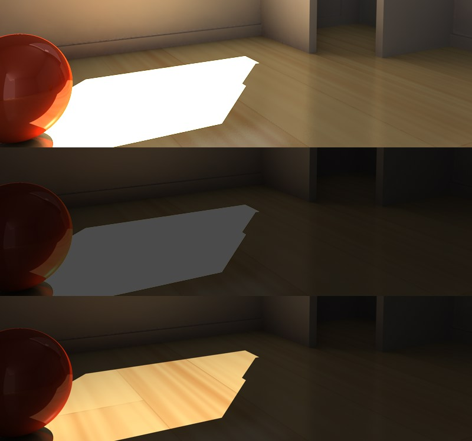上图：原始图像；中图：输出为 TIFF 在Photoshop 中调暗；下图：原始图像输出为 32位，并用合适的软件调暗。
如你在上面的示例中看到的，HDR 图像可以调暗（如使用 CINEMA 4D 的曝光设置），而不用担心白色表面像传统图片格式一样变灰。上面的场景是被带有非常明亮灯光（400%）的特定 GI 照亮的。
HDR 图像可以表述为一种无法用传统技术描述的颜色数据。
当你在图片查看器或在编辑视图中将图像渲染为 HDR，会使用一种特殊的 HDR 抗锯齿。初看起来图片有很多缺陷，这是因为实际上图片的显示必须降低到显示器的色彩范围。如果使用传统格式进行渲染，图像的抗锯齿则会很完美，因为颜色的深度被降到了8位或16位时，抗锯齿会发挥作用。32位的抗锯齿在渲染时没有颜色限制，也就是说，一个平滑的像素可以有一个远远高于100%的亮度值，因此这时会显示为白色。正确的32位抗锯齿是不可见的，但是在内部是存在的。
- HDR 图像格式（尤其是 HDR 格式：HDR（Radiance）和 OpenEXR）非常适合用在有锐利反射的渲染中。例如，只要把 HDR 图像放在一个天空对象的发光材质通道中，CINEMA 4D 就会在渲染时把高动态范围的亮度纳入计算。
- HDR 图像格式（尤其是 HDR 格式：HDR（Radiance）和 OpenEXR）还适合作为图像基础照明使用，即通过 GI 照亮场景，带有特定的纹理，而不使用灯光光源。
经典 HDR 格式
两种经典（“经典”这个词在快速发展的 IT 世界中是相对的）HDR 格式，Radiance (HDR) 和 OpenEXR，都用在很多渲染流程中，现在都被 CINEMA 4D 支持。
Radiance HDR 是这两种格式中较老的，并且很可能最终被 OpenEXR 所取代。虽然 OpenEXR 的动态范围比 HDR (Radiance) 要小（这在日常工作中是无关紧要的，否则 OpenEXR 不会用在这么多好莱坞影片中），但它可以被压缩为一个小得多的文件。
Radiance (HDR)
HDR 可以保存在一个特殊的32位/像素的模式。Radiance HDR 拥有巨大的动态范围，比自然世界还大得多，这也就是为什么 HDR 文件经常很大，尽管如此，大部分 HDR 纹理库在 Radiance (HDR) 格式中是可用的。
OpenEXR
这个格式是由工业光魔（ILM，Industrial Light & Magic）开发的，并且有较高的压缩率，尽管它有高动态范围。
从 CINEMA 4D R13 开始，有多通道的文件也受到支持了。它与真正的多通道文件不同，后者包含多个通过混合模式相互叠加的图层，而 OpenEXR 只包含通道而没有混合模式（从这些通道创建正确的图层必须使用合成软件来完成）。但是 CINEMA 4D 将会尝试在导入时基于通道名称创建图层。
点击选项会出现一些可用的保存选项：
我们不会用很多技术上的细节吓到你，而是给你一个通用的描述。压缩模式有以下几种：造成大量信息损失、造成颜色信息损失或无损（下面列表中最上面的5种），以及包含全部动态范围。
尤其是对于需要大量或频繁编辑的图像来说，不应该16位浮点压缩，因为它会很快导致不精确或色彩范围限制。
选择哪种压缩方式应该通过测试来决定，在质量、文件尺寸和编辑速度之间权衡选择最可以接受的方案。
名称
许多编辑程序支持图片序列。但是它们各自遵循不同的命名惯例。
一些程序需要文件名以数字结尾，其他一些则是扩展名。一些程序只能处理三位数的图片。
使用这个菜单可以设置你的编辑器所要求的序列编号和/或字母样式。在下面的示例名称中，0000 表示任意数字，TIF 表示任意三字母的扩展名。
Name0000.TIF 示例：Test1234.JPG，
Name0000 示例：Test1234，
Name.0000 示例：Test.1234，
Name000.TIF 示例：Test123.TGA，
Name000 示例：Test123，
Name.000 示例：Test.123。
图像色彩特性
通过这项设置你可以定义图像/纹理中要嵌入哪种色彩配置文件。在 R12 版本之前，CINEMA 4D 会自动使用 sRGB 色彩配置文件进行保存。现在，它可以设置为任何想要的色彩配置文件，不过你应该只有真正需要的时候才去改变这项设置。
注意，许多程序不能读取色彩配置文件（如 Windows 7 只能读取部分色彩配置文件）。
当与多通道一起使用线性工作流程时，我们推荐在渲染时最少使用16位深度。如果无法实现，请禁用线性工作流程选项来恢复正常的 CINEMA 4D 属性（因为多通道是同线性配置文件保存的，QuickTime 无法嵌入色彩配置文件，并且在导入到外部程序时会发生读取错误）。
更多色彩管理的信息参见这里。
通常，默认的 sRGB 就是正确的配置文件。
点击右侧的按钮会打开下列菜单项以供选择：
禁用颜色管理
不会嵌入色彩配置文件（在文件打开是会根据工程设置或位图着色器设置进行读取）。
载入/保存
你可以用它们载入一个色彩配置文件，或保存一个已有的色彩配置文件。这些文件的扩展名为“*.icc”。如果在这里加载了一个图像，则会使用其色彩配置文件。
从显示器中载入
你可以使用显示器（硬件）的配置文件，但是不推荐这样做，因为你的显示器的配置文件几乎不会与另一台相匹配。
sRGB
以 sRGB 色彩配置文件保存图像。
线性
以线性色彩配置文件保存图像。
Alpha 通道
如果启用了这个选项，在渲染中会计算一个预叠加的 alpha 通道。
Alpha 是一个与彩色图片有相同分辨率的灰度图，alpha 通道中，一个白色像素表示彩色图像中该处的的像素是显示的，而黑色像素表示不显示。
你可以使用 alpha 通道在视频软件中进行合成。例如，你扫描了一张机场的照片，想要在它的跑道上渲染一台飞机。那么你可以在 CINEMA 4D 中渲染一架带有 alpha 通道的飞机，然后在你的合成软件中使用 alpha 通道来去掉飞机以外的部分，这样就可以显示出机场了。Alpha 通道图片的边缘是抗锯齿的，可以确保在合成图片中的过渡是平滑的。
预叠加的 alpha 通道有一个明显的缺点，如下图所示。
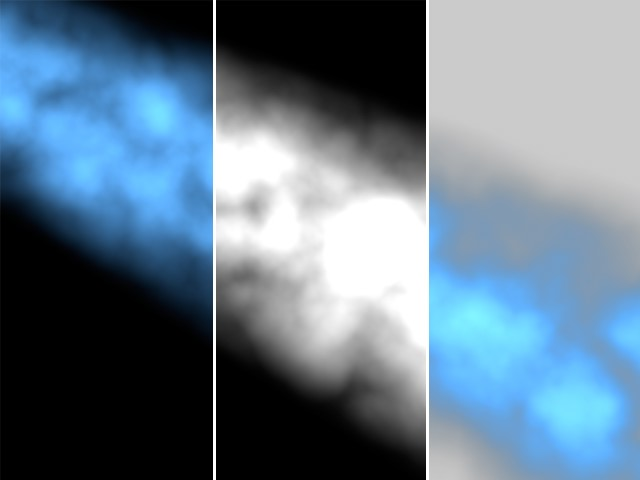从左至右：渲染的图片、alpha 通道、结果。
在示意图中，alpha 通道产生了一条深色的接缝，这是因为图像和 alpha 通道是通过抗锯齿渲染的，根据定义，彩色图片和 alpha 通道必须进行叠加，因此黑色被计算了两次。你可以通过使用“直接 Alpha”选项来避免这个问题。注意，直接 Alpha 只适合用来合成，对传统图片来说它们并没有什么作用。
如果你在场景中使用了天空、地面、前景或背景，整个 alpha 通道是被遮住的。如果你需要 alpha 通道，请不要使用上述的任何对象。
TARGA、TIFF、PICT、PSD 和 QuickTime 影片这些格式是自动包含 Alpha 通道的。如果你启用了分离 Alpha 或选择了一个不同图片格式，alpha 通道会单独保存为一个图片，这些文件在其文件名前会加上A_，如 A_room.tif，分离的 alpha 会被保存为 TIFF 格式。
Alpha 通道可以包含到一个影片中，只要选择的编码支持 alpha 通道。
直接 Alpha
如果你的合成程序支持直接 alpha，你可以使用这个选项来避免预叠加 alpha 中产生的深色接缝。注意，直接 alpha 只适合用来合成，对传统图片来说它们并没有什么作用。
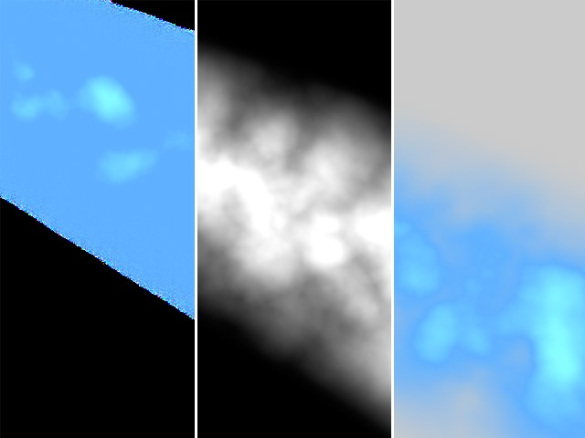从左至右：渲染的图片、alpha 通道、结果。
提示：
不要在你的命名习惯中使用引号（“”或‘’）。
注意！
CINEMA 4D R11.5 之前的版本使用不同于 alpha 通道输出的方式来处理透明表面（通过 alpha 蒙版或
透明度通道）。
示例：一个带有 alpha 蒙版的材质可以用来在平面上创建一个孔，这个平面位于一个巨大的作为背景的球体里面。渲染结果如下面的左图所示。假设你现在想要输出场景为一个 alpha 通道，其中只包含带孔的平面。要实现这一点，给背景（也就是球体）添加一个合成标签。在先前版本的 CINEMA 4D 中，你要做的是禁用摄像机可见选项。在 R11.5 及以上版本中，你还需要禁用透明度可见选项来生成 alpha 通道图片，如下面的右图所示：
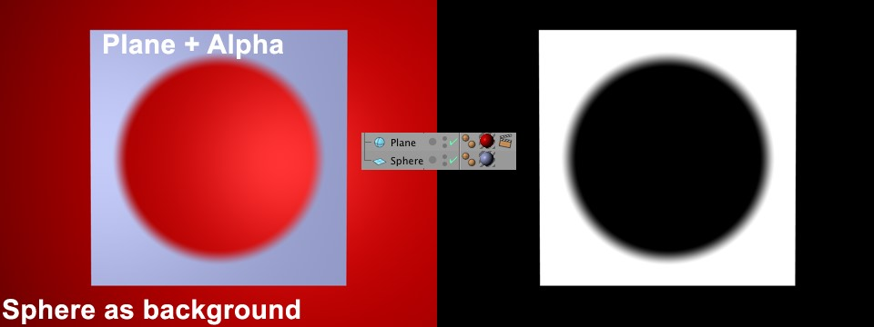要生成如右图所示的 alpha 通道，上面提到的两个选项都必须在合成标签中被禁用。
这么做的原因在于渲染器的优化，现在渲染器会使用光影追踪来计算平面透明表面（包括 alpha 蒙版）。光影追踪必须通过合成标签明确地指定，位于透明对象后方的物体不可见。
分离 Alpha
Alpha 通道通常包含在支持 alpha 通道的图像格式中，这也就意味着它们是作为图像文件的一部分来保存的。但是，如果你想要将 alpha 通道保存为一个单独的文件，可以启用这个选项。这时除了彩色图片（如 room.tif），你还会得到一个包含 alpha 通道的文件（如 A_room.tif）。
分离 alpha 通道文件会被保存为与渲染图像相同的格式（格式）。
8位抖动
抖动是一种将随机图案添加到颜色中来防止色带的过程。虽然抖动增强了图像质量，但是它也增加了文件的尺寸，尤其是对于网络图形，你可能需要禁用抖动来减小图像文件体积。
包括声音
如果选择了上面的一种视频格式，则可以添加声音合成到视频中。
提示：
注意，这在 Team Render 中是无效的！
QuickTime VR 选项
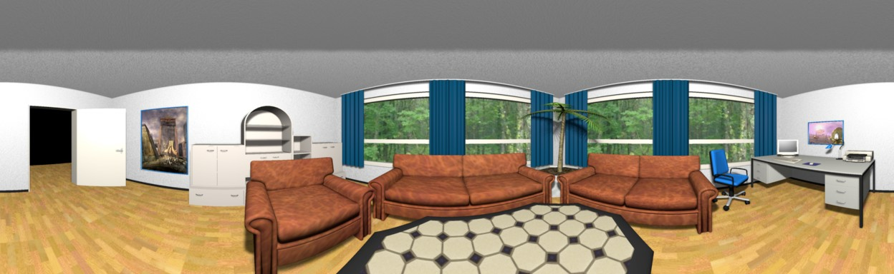
你可以利用这个页面上的选项来创建 QuickTime 虚拟全景和 QuickTime 虚拟对象影片。
镜头效果不能与 QuickTime 虚拟影片一起使用。
如果安装了可选的 Team Render 组件，注意，QuickTime 虚拟对象和全景影片不能使用 Team Render 或物理渲染器来进行渲染。
QuickTime 虚拟技术将一系列水平环绕画面进行 360° 无缝合成，让你可以自由的在虚拟场景中移动和缩放。
要使用这些设置，你需要将保存页面的格式设置为 QuickTime 虚拟全景或 QuickTime 虚拟对象。
生成文件
虚拟场景
CINEMA 4D 会创建一个预览 QuickTime 虚拟全景或对象影片，在渲染和保存之后，你可以在 QuickTime 中进行查看了。
中等
CINEMA 4D 会创建一个全景图或单独的对象胶片图像，你可以用如苹果的 QuickTime VR 工具等对其进行编辑。
两者
CINEMA 4D 会创建一个预览 QuickTime VR 影片、一个全景图或单独的对象胶片图像，你可以用苹果的 QuickTime VR 工具对其进行进一步处理。
苹果建议：
这是一些苹果的推荐设置（来自 QuickTime FAQ）：
- 焦距设置为 15 mm、28 mm 或 35 mm。
- 不要使用鱼眼镜头。
- 对于室内拍摄，使用 15 mm 镜头，这样可以得到 97° 的垂直可视角度。
- 使用 15 mm 镜头，这可以将环绕拍摄画面减少到 12 张。
- 如果使用 35 mm 镜头，需要在视野的上下方创建额外的环绕画面。
- 两个相邻帧之间应该重叠 30% 至 50%，以此决定一个水平环绕画面中需要的帧数。
水平步幅 [1..1000]
开始角度 [-∞..+∞°]
结束角度 [-∞..+∞°]
当输出格式为 QuickTime 虚拟对象时，你可以在这里指定摄像头环绕对象时的水平步数。无论是全景模式还是对象模式，都可以设置开始角度和结束角度。
垂直步幅 [1..1000]
开始角度 [-90..90°]
结束角度 [-90..90°]
这些设置只会应用到 QuickTime 虚拟对象影片中。垂直步幅指环绕画面的组数。对于简单的对象环绕来说步幅设为 1 就足够了，如果观众需要倾斜观看角度，则需要更多组环绕图。一般来说，最好是将数值设为单数，因为在水平环绕图上方和下方的环绕图数量是相同的。开始角度和结束角度用来指定倾斜的范围，其最大范围为 -90° 到 +90°。
输出页面的分辨率下拉列表中有两种内置的 QuickTime VR 分辨率：1248 × 384 QTVR 和 2048 × 768 QTVR。同样在输出页面，设置影片格式为自动。你可以在分辨率下拉菜单下方的输入框中输入自定义的分辨率。确认输入的数值可以被4整除。
术语
全景图是指一个从摄像头可以看到 360° 全方位的环境视图。QuickTime 虚拟影片让观众可以自由地绕其自身的轴旋转浏览全景图。摄像机可以上下倾斜。
当在保存页面选择了 QuickTime 虚拟全景时，在水平和垂直设置中只有开始角度和结束角度是可用的。
QuickTime 虚拟对象影片 让你可以用鼠标交互地旋转一个对象，要得到平滑的对象影片，可以设置水平步幅为 36、角度从 0° 到 360°，垂直步幅为 19、角度从 90° 到 -90°，这样就可以较好地覆盖对象，并允许自由的旋转物体。
默认 X 分辨率 [2..4000]
默认 Y 分辨率 [2..4000]
这些设置定义了 QuickTime 虚拟影片的输出分辨率。默认分辨率为 320 × 240 像素。
QuickTime 虚拟影片最终渲染中的原始材质分辨率是通过输出页面中的分辨率设置来定义的。原始材质的 Y 轴分辨率应该至少是 Y 轴默认分辨率设置的 1.6 倍。
对于 QuickTime 虚拟对象影片，将对象放置在 0,0,0（世界坐标）处，确保该对象在对象管理器中是被选中的。
如果生成图像被设置为“虚拟场景”或“两者”，你会创建一个由所有序列帧组成的 QuickTime 影片。
当渲染 QuickTime 虚拟全景和 QuickTime 虚拟影片时，根据抗锯齿会有以下限制：
最大级别参数决定了颜色和边缘的最大抗锯齿。
最大级别不能被超过，即使在合成标签中指定了更高的设置，合成标签只在最小级别和最大级别的范围之内有效。
渲染时间很大程度上取决于最大级别设置。正因为如此，请避免使用大于 4×4 的设置。
多通道图像
保存
多通道渲染让你可以很方便地在合成软件中编辑你的渲染图像或视频，如 Adobe Effects、Photoshop、Combustion 等。利用多通道，你可以将 CINEMA 4D 渲染分成单独的图层，如投影、反射、高光和单独的光源。你可以将这些图层保存为 RLA、RPF、Photoshop（PSD）或 BodyPaint 3D (B3D) 格式。
假设你渲染了一个复杂的影片，但是它的反射太强了。利用多通道，你不需要重新渲染这个场景，而只用在合成软件中减少反射图层的不透明度。或者你也可以在同一个渲染中包含其他的光照配置，这样你就可以在后期处理中选择最佳配置了。
对于在渲染中尝试使用各种不同的光照配置来说，使用多通道是一个理想的做法。这些配置作为一个多通道文件被渲染要比作为单独的工程快得多。
提示：
当通过 Team Render 渲染多通道时，需要设置一个相对路径，而不是绝对路径。
文件
你可以在这里设置文件的保存路径。
多通道文件比单图层文件需要更多的存储空间，因此在渲染之前，检查你是否有足够的空间，尤其是渲染多通道动画时。
当通过 Team Render 渲染时，必须输入一个相对路径。
格式
选项…
只有当选择的格式有额外选项时才可以使用这个按钮。点击“选项”来打开这些设置。
文件
这个路径定义了渲染的图片或动画保存的地方。特别注意对于完整的动画要选择有足够磁盘空间的文件夹。
相关的文件名和路径可以参考文件。
要输出 Photoshop 7 中的通道，请将格式设置为 Photoshop (PSD)，点击选项按钮，在对话框中启用 Photoshop 7 选项。这能确保在合适的地方使用线性减淡混合模式。
深度
设置通道深度为 8、16 或 32 位。
多层文件
如果启用了该选项，所有的图层都会保存在一个多通道文件中。另外，你必须设置格式为 Photoshop (PSD)、BodyPaint 3D (B3D) 或 TIFF。如果禁用了该选项，CINEMA 4D 会根据设置的格式为每个通道创建一个单的文件，每个文件名后面会添加一个后缀来作为区别。
提示：根据支持的混合模式的不同，图像在别的软件中查看时可能会有所不同，这可能是因为缺少混合模式或其他功能。
提示2：
注意，在禁用
线性工作流程时使用32位多图层时可能会出错，这是因为 Photoshop 只能正确地导入 *.psd 文件但不能正确地显示它们。只要启用线性工作流程或使用其他深度，就没有问题了。
图层名称作为后缀名
如果你选择了不支持多图层的格式，每个图层会被保存为单独的文件。如果启用了这个选项，图层的名称，如_漫射或_反射，会被添加到文件名后面。
RELEASE 17
用户定义层名称
如果启用了这个选项，你设定的多通道名称（在多通道名称上双击）会替代默认的名称。
直接 Alpha
这个选项只有在启用了 Alpha 通道 选项时可用。
通过直接（非叠加）Alpha（多通道便签页）选项，你可以设定相应的多通道是否与对应的 alpha 通道进行预叠加。
合成方案文件
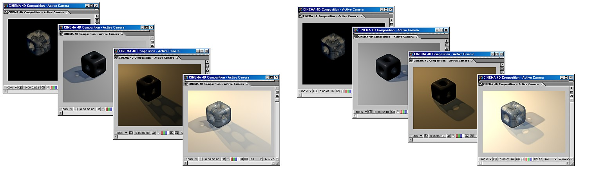一个合成的工程文件是由多个层组成的，每个层都可以单独编辑。
CINEMA 4D 支持如下视频编辑软件：
- Adobe After Effects（CS3 或更高版本）：多通道文件、摄像机数据、灯光和空对象（关于各种文件交换的方式，参见After Effects）。
- Foundry Nuke（已测试 v 6.3 或更高版本）：多通道文件、摄像机数据、灯光、通过单独 FBX 文件保存的对象。
- Apple Final Cut Pro（4.0 或更高版本，仅 CINEMA 4D Mac 版）：多通道文件。
- Apple Motion 3：多通道文件，摄像机数据、灯光和空对象。
- Apple Shake 3.5 和 4：多通道文件。
- eyeon Digital Fusion （V5.0 或更高版本）：多通道文件。
CINEMA 4 可以渲染各种多通道并且将它们保存为单独的文件（位图或视频）。这些通道可以载入到上面列出的合成软件中，你可以单独地编辑这些通道并使用各种效果。
其他一些合成软件也可以打开这些文件而不需要插件。
你也可以导出带有动画的 CINEMA 4D 的摄像机和灯光，然后在 After Effects 或 Combustion 中编辑它们。
支持以下摄像机数据：
- 摄像机位置
- 摄像机方向
- 焦距
- 摄像机的目标距离（前提是使用了目标摄像机）
支持以下灯光类型：
- 点光
- 平行光
- 聚光灯
导出多通道文件
要从 CINEMA 4D 中导出多通道文件：
- 在渲染设置左边栏的多通道下拉菜单中选择要渲染的通道。禁用保存标签页中的多层文件选项（每个通道必须保存为单独的文件）。
设置想要导出的文件格式，如 QuickTime 影片。
设置保存这些通道的路径。
- 确认多通道子菜单中的保存选项是勾选的，然后选择合成软件。渲染图像或动画。在常规图像子菜单中选择相同的保存路径，这样合成文件就可以与所有的相关文件保存在相同的文件夹中。
如果启用了保存标签页中的相对选项，那么 CINEMA 4D 动画的开始和结束时间也会被转换（需要 After Effects CS3 或更高版本），否则导出的动画总是从0帧开始。
保存 FBX 文件
如果为 Nuke 创建了一个合成文件，它将不会包含摄像机、灯光或对对象的 3D 信息。如果启用了这个选项，这些信息可以通过一个 FBX 文件导出，CINEMA 4D 会创建一个单独的 FXB 文件。
点击保存方案文件…按钮可以创建创建一个合成文件但不必渲染整个场景。但是这只在已经渲染了所有通道的情况下有用。例如，如果你已经使用 Team Render 渲染了完整的动画，并包括全部多通道，那么你可以点击这个按钮来生成正确的合成文件。
- 将通过 CINEMA 4D 输出的合成文件导入到合成软件中。
要将多通道文件导入到合成软件中：
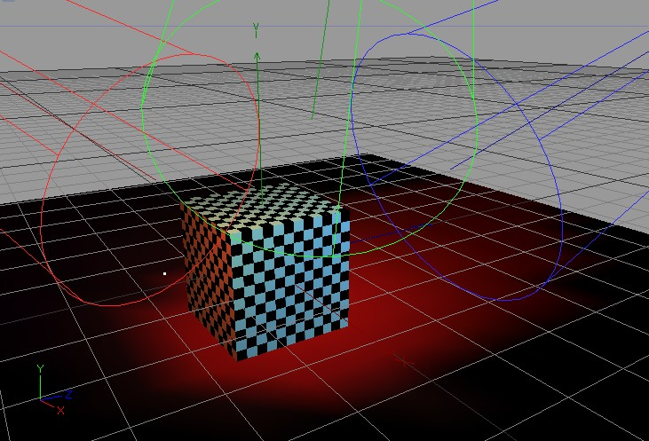CINEMA 4D 的工程。
After Effects
提示：
注意，After Effects 只能与上面第2点中描述的
文件交换配合使用。
在 After Effects 中，导入 .aec 文件（文件 | 导入 | 文件）。
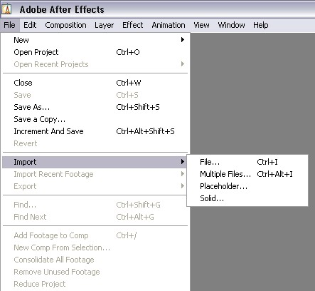After Effects 中的工程。
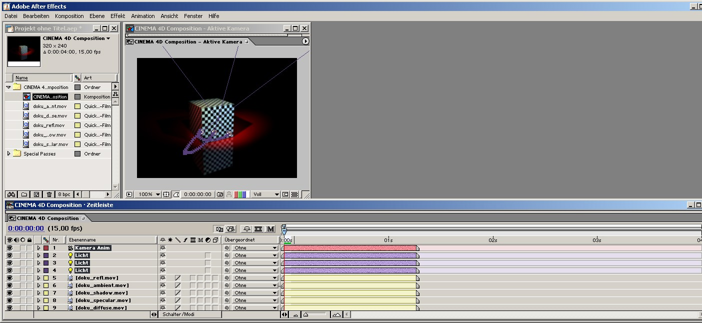
你需要将下列插件（位于 CINEMA 4D 程序目录的“Exchange Plugins/aftereffects/importer”文件夹中，选择对应你的操作系统和 After Effect 版本的插件）复制到 After Effects 的插件目录中（如果这个目录不存在，请使用“Effect”文件夹）：
- PC：“C4Dimporter.aex”
- Mac OS：“C4Dimporter.plugin”（需要先解压）
其他合成软件可以加载这些数据而不需要插件。
额外功能：
- 分配给光源的投影密度也可以被导出（活动的）
- 对象管理器中的“渲染状态”也会影响导出。在下面的示例中，只有对象 2 会被导出：
- 所有现有的摄像机都会被导出（如果没有在“渲染状态”中禁用）
- 支持 XRefs（会被导出）
- After Effects 中的目录和灯光的逻辑命名
- 参见这里
- 支持立体：很多立体通道和多通道（参见立体）都会以正确的组合和明确的命令被加载到 After Effects 中。
- 舞台对象会根据摄像机进行计算。
要获取关于 After Effects 和 CINEMA 4D 文件交换的更多信息，参见 After Effects。
支持颜色、投影密度、角度和光源的亮度动画。
支持 Unicode。
提示：
当使用
线性工作流程时，确保在 After Effects 中启用了“线性”工作空间颜色（它只在有工作空间色彩空间的情况下可用，且应该被设置为 sRGB）。
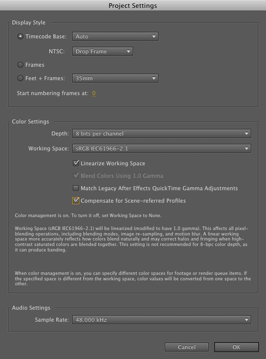
Motion
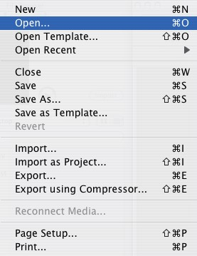
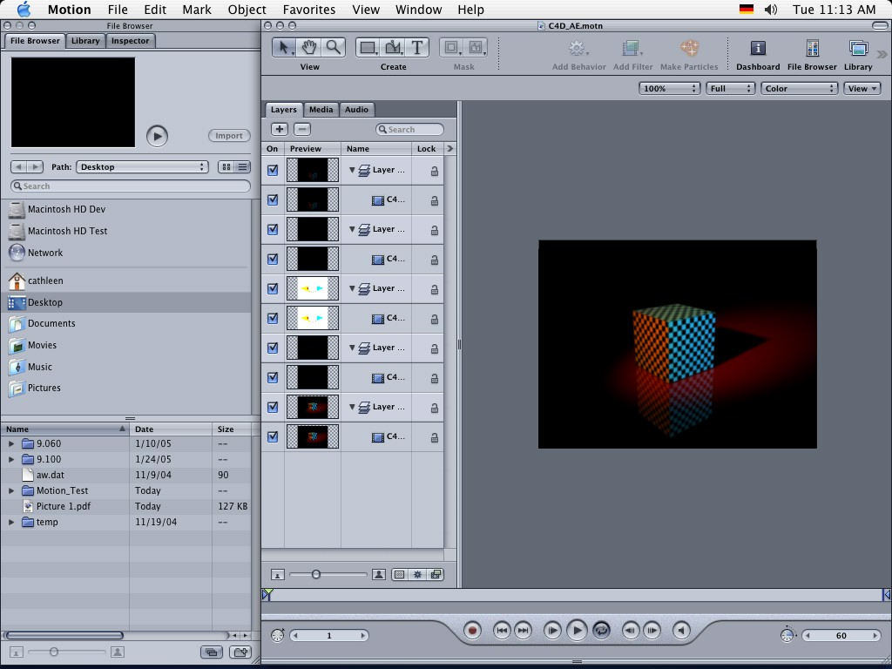
Nuke
打开相应的 *.nk 文件：
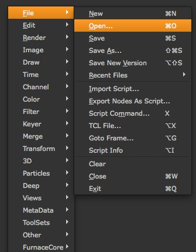
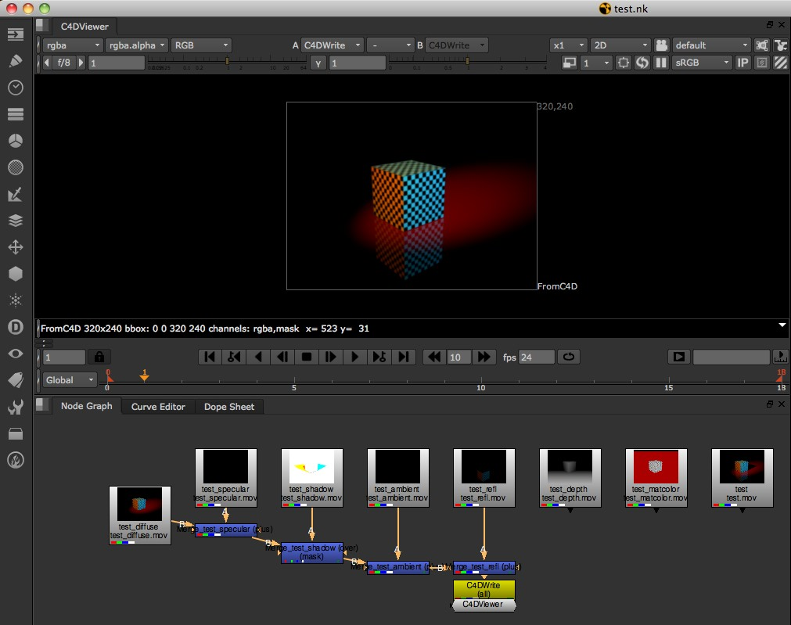
Final Cut Pro
在 Final Cut Pro 中，导入 .xml 文件（文件 | 导入 | XML），忽略出现的警告。
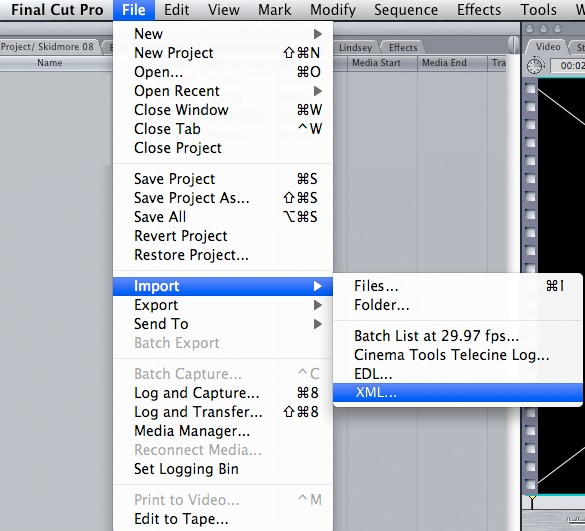
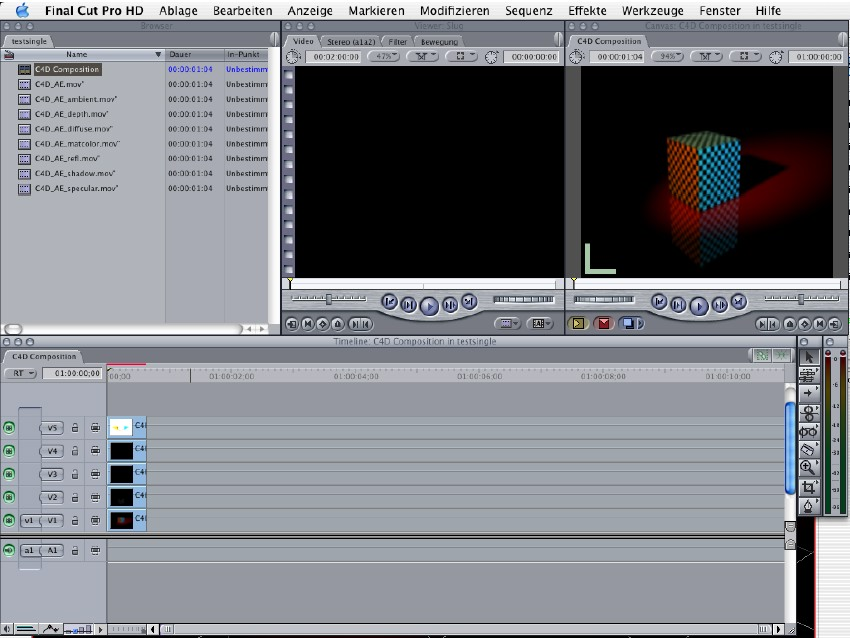Final Cut Pro 中的工程。
Digital Fusion
使用打开命令打开从 CINEMA 4D 中导出的 *.comp 文件。
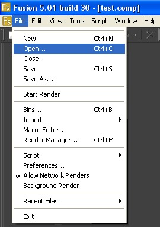
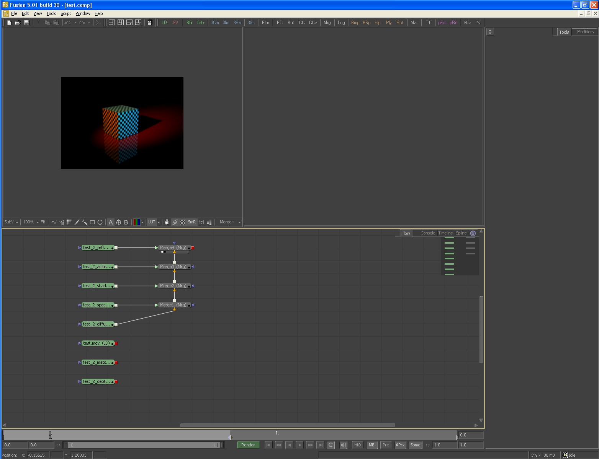
包括时间线标记
如果你在时间线中设置了 标记，那么它们会被包含到合成文件中，包括它们的名称。
包括3D数据
使用这个设置来设定是否需要导出摄像机、灯光或对象。如果给灯光和摄像机以外的对象分配了外部合成标签，那么它们会被导出为空对象（见下文）。
相对
假设你的场景有两个活动摄像机，第一个摄像机活动范围为第20帧到第50帧，第二个为第2帧到第117帧。相对设置可以用来决定在合成软件中动画的帧范围：是20到50帧和2到117帧（启用相对），还是0到30帧和0到115帧（禁用相对）。当然，这个设置不会限制活动照相机。
导入影片比图片序列要更快。
合成软件可以正确地导入合成方案，前提是这个软件与 CINEMA 4D 安装在同一台电脑上。当导入到 After Effects 中时，合成方案文件必须与通道文件在同一个文件夹中，否则需要手动移除图片序列或视频。
通用信息
只要合成软件和 CINEMA 4D 在同一台电脑上，导入合成文件就不需要额外的工作，否则合成文件和所有链接的文件必须位于同一目录下（对于 After Effects），或者需要在合成软件中手动移除图像或视频。
限制
- 网络不能写入合成方案文件。对于网络渲染，可以通过点击渲染设置保存页面的保存按钮手动生成方案文件。你可以在任何时候保存方案文件——即使在渲染通道之前。缺失的通道会在 After Effects 中表示为替代帧，你可以在任意舞台替换它们。
- QuickTime VR 不能使用合成方案文件（QuickTime 不支持多通道）。
- 不支持 B3D 图像序列。
保存
定义是否保存合成文件（在通过 Team Render 渲染时不可用）。
目标程序
选择目标合成软件。CINEMA 4D 会自动输出合成文件为正确的格式。
保存方案文件…
让你可以创建“合成”文件而不用渲染整个场景。但是这只有在你已经渲染的所有通道的情况下有用。
如果你已经通过 Team Render 渲染了一个包含多通道的大型动画，点击这个按钮可以创建相应的合成文件。
注意，渲染器仍然会在后台启动，在使用物理渲染器时会花费相当一段时间。你可以通过使用标准渲染器解决这个问题，它所需要的准备时间短得多。